The architecture, with each piece of work that builds it linked in. doc-5 vision · doc-5.1 v1 manifestation.
You edit a flow's code; the Stop hook drives an out-of-band sub-agent that re-extracts, re-induces the flow, preserves your edits, and writes the store. The webview reads the store to render the selected flow. The MCP server is the only user-facing write path; SessionStart only banners.

Solid bold arrows = data written/read; dashed = conditional/secondary. Every tagged box maps to a row in §4.
task-27.0's cost-of-regeneration seam is the spine. Everything left is objective and free to regenerate from code; everything right is judgement about what matters, carried on layer='agentic' + namespaced kind + confidence + inference_rationale.

The agent judges only the seam (boundary, bridges, doc attachment); the deterministic call-graph fills each tree's interior for free.
Five tasks in order are everything v1 needs; 27.1.6 is the ship point. 27.1.7 is the first add-on. The rest are additive layers the section-F seams keep non-breaking. There is no 27.1.5.

Solid = blocking critical path; dashed = additive dependency.
The pieces of work that link into the diagrams above. Builds names the component(s) each delivers.
| ID | Role | Status | Builds (component in §1–§2) | What it delivers · why it matters |
|---|---|---|---|---|
| 27.1.1 | critical | To Do | Stop hook · drift-reconciler sub-agent · drift-sync skill · MCP server · SessionStart banner · installer | The substrate that makes lazy hydration & auto-sync possible — the deterministic trigger and the sub-agent→skill execution path. Root dependency for all of v1. |
| 27.1.2 | critical | Done | re_extract funnel · field-ownership preservation fix · drift staging · file-module tier · React Flow adapter · layout |
First end-to-end slice: a renamed symbol's drift is detected on session open and the hand-written description carries across. Validates every seam contract. |
| 27.1.3 | critical | Done | flow entity (agentic.flow) · subgraph induction · deterministic stub flows · left-panel selector · per-flow render |
Makes flow a first-class entity and replaces the entrypoint list with a flow selector. The v1 comprehension unit; the tiling block of the eventual whole-repo map. |
| 27.1.4 | critical | To Do | gap-detection · agentic.bridge inference · node descriptions · 21.2 extractor port · seed/bridge export |
Closes the L0→L1 threshold static analysis can't fill (orphan entrypoints, doc↔code links) and produces the seeds + bridges the hydration agent assembles into umbrellas. |
| 27.1.6 | critical · ★ ship | To Do | Stop-hook dispatcher (HYDRATE vs RE-SYNC) · flow detection · drift-sync pipeline · watermark-ladder preservation · re-attachment bin | v1 ships here. Builds each flow's diagram on first work and keeps it in step by pure auto-sync, preserving your edits. Embodies "anything you author is always considered" + "absorbs drift out-of-band". |
| 27.1.7 | first add-on | To Do | key-control-flow agent · key-decision selection/ranking · budget-aware render · pin/suppress · semantic edge labels | Turns "renders the flow" into "renders the essence of the flow" — selects the golden-path decisions, quiets incidental branches. The comprehension headline. |
| 27.1.8 | deferred | To Do | host-neutral bundle · host-keyed install target · Cursor/OpenCode + MCP fallback | Second-host parity without translation code. A distribution layer above the core; Claude Code ships v1 natively. |
| 27.1.9 | deferred | To Do | drift triage classifier · typed TriageSubject / TriageVerdict contract |
The review/escalation apparatus v1's silent auto-sync omits; also the reuse seam for diagram→code authoring (27.2). |
| 27.1.10 | deferred | To Do | /drift walkthrough · PreCommit gate · change-scoped summary · optional observation store |
Optional surfaces for users who want to inspect/decide on drift before committing. Additive on top of v1's automatic absorption. |
| 27.1.11 | deferred | To Do | clustering in packages/core · flow-chunking signal · cross-dir refactoring hints |
Demoted to a budget-triggered fallback: extra signal when a flow is too large to read, plus refactoring hints. v1 chunks deterministically. |
| 27.1.12 | deferred | To Do | multi-flow composition · budget-capped N-tier zoom · level-projection · partial hydration | Completes doc-5's "one zoomable map" as a composition of flows over the file/dir scaffold. Additive over the generic render seam. |
| 27.1.13 | deferred | To Do | Ariadne block_kind/condition_text · sibling scope linkage · argument_texts |
Upstream precision add-on: surfaces control-flow structure Ariadne already parses, so 27.1.7 can ground inferences in hard facts. Gates nothing. |